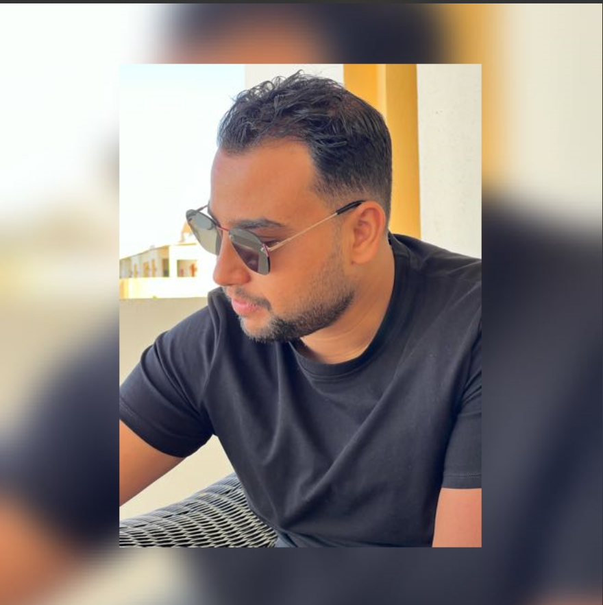

SaadEl-Kenawy
Senior Cloud Web App and Infrastructure Engineer

Summary
A Senior Cloud Architect with expertise in AWS, Azure, Oracle, and automation for cloud computing is a highly skilled professional responsible for designing, implementing, and optimizing cloud solutions for organizations,
This role requires a deep understanding of cloud platforms and automation tools to ensure the efficient and secure operation of cloud-based services.
Certifications & Skills:
- I hold certifications as a Red Hat Certified Engineer and a Red Hat Certified System Administrator.
- I am also an Oracle Certified Foundation 2022 Associate.
- I completed the Cisco Academy Diploma in Linux and Networks from NILOS at AASTMT.
- My skills include proficiency in Red Hat Ansible, Terraform, Vagrant, Python, and Bash.
- I have expertise in working with various Cloud Platforms, such as Oracle, Azure, and AWS, as well as Openstack, Kubernetes, and Docker.
Professional Experience:
- Cloud Architect | Digital Path (2023 - Present)
- I design efficient, scalable, and secure cloud-based solutions to meet the unique requirements of our clients.
- I select the most appropriate cloud technologies to align with our organization's needs.
- I take care of managing cloud resources, monitoring usage, optimizing resource allocation, and ensuring efficient resource utilization.
- My responsibilities also include maintaining cloud infrastructure security and ensuring compliance with relevant regulations and standards.
- Telco Cloud Implementation and Operations Engineer | Benya Systems (2021 - 2022)
- My role involved working with ACI Fabric OS, NX-OS, SDN controllers, and ETSI MANO NFV standards.
- I managed network equipment for Data Center Network services.
- Utilized monitoring and logging platforms, such as Prometheus, Grafana, and Kibana.
- I was involved in projects related to Telco Cloud Data Center Core Network Services.
- IT Data Center Operation and Monitoring Engineer | TE Data (2019 - 2021)
- I played a significant role in developing and supporting architecture in high-throughput systems for monitoring solutions.
- Monitoring automated build and continuous software integration processes was part of my daily tasks.
- I ensured source code control for tracking configurations and changes.
- Building Kubernetes (K8S) clusters with up to 3 nodes was another responsibility of mine.
- Field Operation Engineer | TE Data (2018 - 2019)
- I communicated daily with clients via phone and email, maintaining composure in critical situations.
- Providing on-call level-2 support for clients was an important aspect of my role.
- Network Engineer | General Electric (2017 - 2018)
- I performed scheduled service work, including installations, testing, and repairs.
- Wrote work orders and adhered to operational parameters.
- I provided technical support, both on-site and through on-call consultations.
- Administered IP addresses and developed network resources while training support personnel.
- Technical Support Engineer | CNG (2016)
- I assessed system hardware and software, suggesting modifications to enhance performance.
- Configured hardware and software for setting up workstations for employees.
- Removed malware and threats from laptops and desktop systems.
Education:
- I graduated from Arab Academy for Science, Technology & Maritime Transport with a Bachelor's degree in Computer Engineering in June 2016.
- I also obtained a Diploma in Networking Infrastructure and Linux Operating Systems from Arab Academy for Science, Technology & Maritime Transport & NILOS between September 2016 and 2017.
- My graduation project involved designing a student and staff information system using wireless technology and NFC (RFID) via mobile phones with an application system.
Certifications:
- Oracle cloud Infrastructure 2023 Architect Assoicate
- AWS Solutions Associate
- Red Hat Certified Engineer (RHCE)
- Red Hat Certified System Administrator (RHCSA)
- Oracle Cloud Infrastructure 2022 Certified Foundations Associate
- Oracle Cloud Infrastructure Multicloud Architect
Contact Me